← Index · ← Previous · Next →
Authors: Brian J. J. Khor, Nadie LiTenn, Martin Sasieta, Brian Swingle
Type: theory · Category: quantum information and computing · PDF: https://arxiv.org/pdf/2605.03017v1
Analysis basis: full PDF text, analyzed in chunks
Topic relevance: 🔥 entanglement & information structure 4/5 · analog quantum simulation 3/5 · non-equilibrium dynamics 3/5
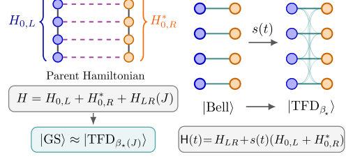
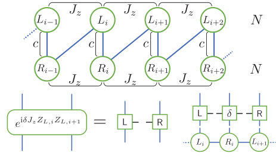
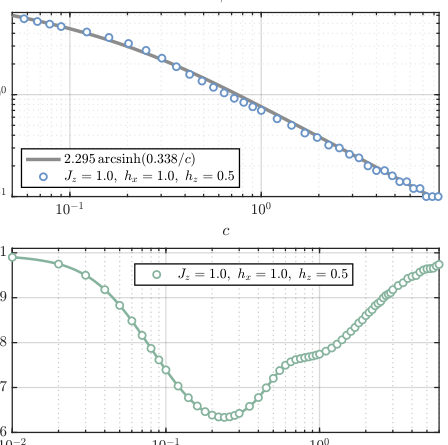
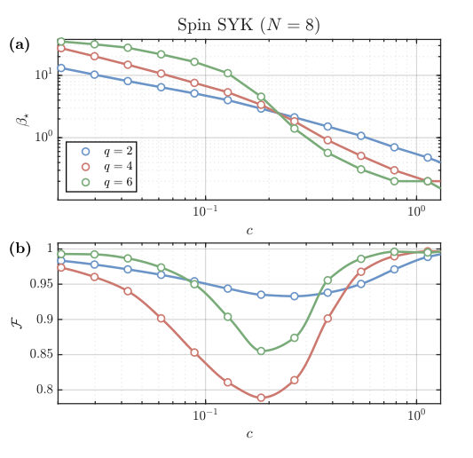
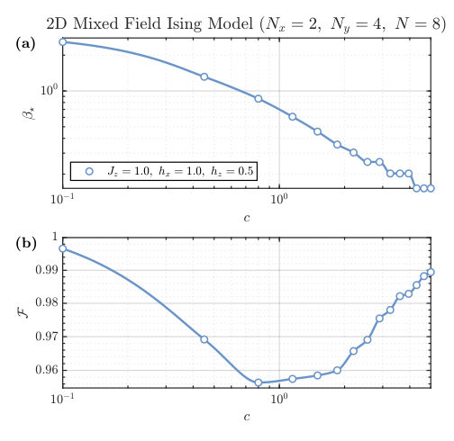
Summary. The paper presents a method to prepare high-fidelity Thermofield Double states via adiabatic evolution of a parent Hamiltonian. By adding a penalty term to suppress energy leakage, the authors demonstrate that the fidelity loss typically associated with increasing system size can be mitigated. This provides a robust framework for preparing thermal states in both local and non-local quantum systems.
Why it may be interesting. This is highly relevant for many-body dynamics and quantum computing as it provides a scalable protocol for preparing complex thermal and purified states essential for studying quantum gravity and thermal physics on near-term quantum hardware.
Main problem. Efficiently preparing high-fidelity Thermofield Double (TFD) states on quantum computers, specifically addressing the exponential decay of fidelity with system size in standard parent Hamiltonian constructions.
Main result. The authors propose a modified parent Hamiltonian with an energy-mismatch penalty term that suppresses off-diagonal leakage, thereby reducing or removing the exponential decay of fidelity as the system size increases.
Method. The study uses adiabatic evolution, Matrix Product States (MPS), DMRG, and Exact Diagonalization (ED) to analyze the spectral properties and fidelity of the proposed Hamiltonian.
Model / system. The method is applied to various models including 1D and 2D mixed-field Ising models, spin Sachdev-Ye-Kitaev (SYK) models, and the Maldacena-Qi wormhole model.
Key observables. Fidelity (overlap between ground state and target TFD), optimal inverse temperature (beta*), spectral gap, and off-diagonal leakage weight.
Important parameters / regimes. Coupling strength (J), number of qubits (N), number of coupling operators (K), penalty strength (xi), and scaling dimension (Delta_O).
Assumptions / limitations. The target systems must obey the Eigenstate Thermalization Hypothesis (ETH) and have a bounded energy spectrum without thermal phase transitions at the target temperature.
Figures summary. Figure 1 illustrates the parent Hamiltonian construction; Figure 3 shows scaling of temperature and fidelity in 1D Ising chains; Figure 4 shows ED results for SYK; Figure 6 demonstrates the saturation of fidelity during adiabatic evolution.
Paper structure. The paper introduces the TFD preparation problem, presents the parent Hamiltonian construction, identifies the fidelity decay problem, proposes a penalty-term solution, and validates the method across 1D, 2D, and non-local (SYK) models using numerical and analytical techniques.
A major promise of quantum computers is the controlled preparation of many-body quantum states beyond the reach of efficient classical computation. Among the most important targets are thermal mixed states and their thermofield double (TFD) purifications, which play central roles in quantum many-body physics and quantum gravity. For target systems with a bounded energy spectrum that obey the eigenstate thermalization hypothesis (ETH), we present a parent Hamiltonian built from two copies of the target Hamiltonian and ultra-local couplings between the copies, which we argue is gapped with a ground state that approximates a TFD state of the target Hamiltonian. By adiabatically evolving down from strong coupling, we can thus prepare a high-fidelity TFD state. We study two variants of the parent Hamiltonian using numerical methods in two classes of models: mixed field Ising models in one and two dimensions and non-local "spin Sachdev-Ye-Kitaev'' models. In the simpler variant, the parent Hamiltonian ground state has high overlap with a TFD for system sizes accessible to near-term quantum devices. However, the global overlap decays exponentially with the number of qubits, with a small error per degree of freedom. The second variant introduces an additional penalty term which can be tuned to reduce or remove the decay of the overlap with system size. Together with a general ETH-based analysis, these results suggest a broadly applicable method for TFD preparation that is not limited to particular temperatures or geometric locality.
Authors: Wladislaw Krinitsin, Markus Schmitt
Type: theory · Category: numerical methods · PDF: https://arxiv.org/pdf/2605.03930v1
Analysis basis: full PDF text, analyzed in chunks
Topic relevance: 🔥 non-equilibrium dynamics 4/5 · entanglement & information structure 2/5 · methods for driven-dissipative 2/5 · non-equilibrium universality 2/5
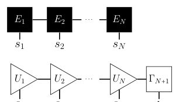
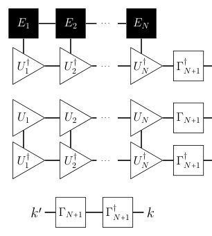
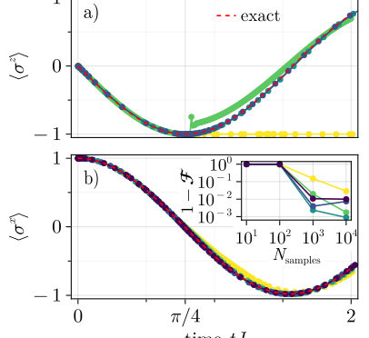
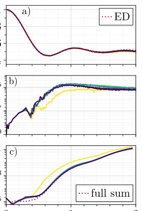
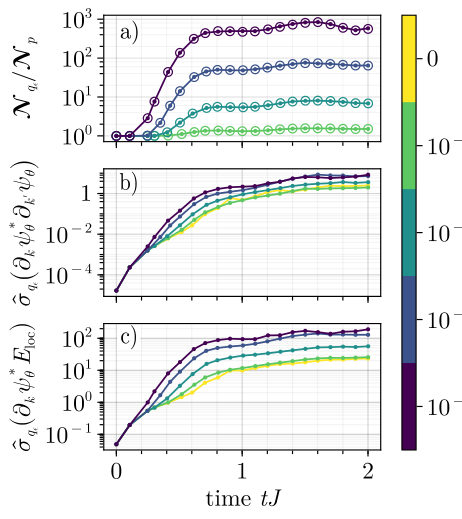
Summary. The paper addresses the estimation bias in time-dependent variational Monte Carlo caused by zeros in the wavefunction. By introducing a cutoff-based importance sampling method, the authors achieve more accurate and efficient simulations of quantum quench dynamics. They also investigate using Tensor Cross Interpolation as an alternative, though its effectiveness is currently limited by the complexity of the neural network ansatz.
Why it may be interesting. This is highly relevant for many-body dynamics as it provides a way to maintain accuracy in real-time evolution simulations where wavefunctions encounter nodes, a common occurrence in non-equilibrium quantum dynamics.
Main problem. Traditional time-dependent variational Monte Carlo (t-VMC) suffers from a systematic estimation bias when the wavefunction contains nodes (roots), which leads to inaccurate real-time dynamics.
Main result. The authors propose an unbiased variant of t-VMC using a cutoff-based deformation of the Born distribution that significantly improves accuracy and reduces sample requirements. They also explore a Tensor Cross Interpolation (TCI) strategy, though they find it limited by the lack of low-rank properties in certain architectures.
Method. Two approaches are investigated: (1) self-normalized importance sampling with a cutoff-based deformation of the Born distribution, and (2) an active learning strategy using Tensor Cross Interpolation (TCI) to approximate the TDVP equations.
Model / system. The study focuses on the 1D Transverse Field Ising Model (TFIM) undergoing quench dynamics, as well as a single-spin system undergoing Rabi oscillations.
Key observables. Quantum Geometric Tensor (QGT), force vector, local energy, magnetization, and infidelity.
Important parameters / regimes. The cutoff parameter epsilon (where epsilon > 0 avoids bias), bond dimension (chi), and lattice size (L).
Assumptions / limitations. The TCI-based approach assumes the existence of a low-rank property in the tensor network architecture, which the authors find is not present in their specific ResNet/RBM setup.
Figures summary. Figure 1 and 2 illustrate the MPS and TCI structures; Figure 3 shows the failure of standard Born sampling in single-spin dynamics; Figure 6 demonstrates the relative error of the force vector and QGT as a function of time and system size.
Paper structure. The paper identifies the bias problem, proposes two solutions (importance sampling and TCI), tests them on a single-spin system and the TFIM, evaluates error metrics and scalability, and discusses limitations of the TCI approach.
When combined with highly expressive ansatz functions such as neural quantum states, variational Monte Carlo (VMC) constitutes a versatile numerical approach to tackle the quantum many-body problem in and out of equilibrium. However, its traditional formulation exhibits a subtle estimation bias leading to inaccuracies, which can be particularly detrimental when addressing real time dynamics. In this work, we investigate two avenues to circumvent said estimation bias. First, we propose an unbiased variant of time-dependent VMC using self-normalized importance sampling with respect to a cutoff-based deformation of the Born distribution. We demonstrate the feasibility and accuracy of the approach in pathological and generic cases of quench dynamics. Furthermore, we explore an alternative sampling strategy based on active learning via the tensor cross interpolation (TCI). While we find that our choice of tensor network architecture lacks the required low rank property, the proposed TCI-based algorithm complements the conventional importance sampling paradigm, providing an alternative perspective that may be further explored in future work.
Authors: A. A. Jimenez-Romero, F. Rojas
Type: theory · Category: quantum information and computing · PDF: https://arxiv.org/pdf/2605.03248v1
Analysis basis: full PDF text, analyzed in chunks
Topic relevance: 🔥 entanglement & information structure 4/5 · non-equilibrium dynamics 3/5 · methods for driven-dissipative 2/5
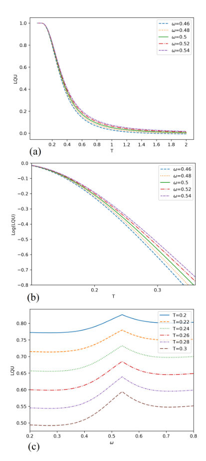
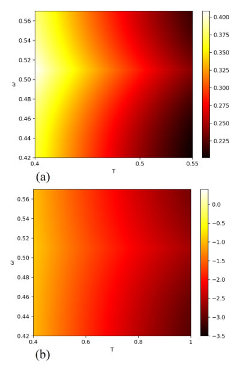
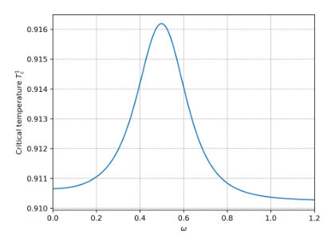
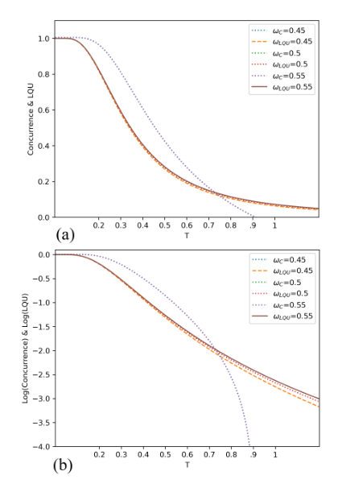
Summary. This paper establishes a general perturbative framework to calculate Local Quantum Uncertainty under external driving. It demonstrates that periodic perturbations can resonantly enhance quantum discord at temperatures where entanglement has already vanished, showing that frequency can be used to tune nonclassical correlations.
Why it may be interesting. It provides a theoretical tool to control and tune quantum correlations (discord) using external driving frequencies, which is highly relevant for controlling nonclassicality in driven-dissipative systems and quantum optomechanics.
Main problem. Developing a general perturbation theory for Local Quantum Uncertainty (LQU) and characterizing how external periodic perturbations modulate discord-type nonclassicality in the linear-response regime.
Main result. The authors derive an explicit first-order expansion for the density matrix square root and show that an external field can resonantly enhance quantum discord even above the entanglement critical temperature, acting as a tunable modulator of nonclassicality.
Method. The study uses a Stieltjes integral representation (based on the gamma function) to expand the density matrix square root and reduces the LQU optimization to the diagonalization of a matrix defined via SU(d1) generators within the quantum linear-response framework.
Model / system. The theory is applicable to bipartite composite systems of arbitrary dimension, with a specific illustrative application to an isotropic Heisenberg model of two coupled spins subject to a local periodic magnetic field.
Key observables. Local Quantum Uncertainty (LQU), Wigner-Yanase skew information, and concurrence.
Important parameters / regimes. Temperature (T), driving frequency (omega), exchange coupling (J), perturbation strength (xi), and the broadening parameter (delta).
Assumptions / limitations. The theory assumes a small perturbation (first-order expansion in epsilon) and that the optimization is performed over local observables within the SU(d1) algebra.
Figures summary. Figures show LQU as a function of temperature and frequency, highlighting resonant enhancement near the exchange coupling frequency and a comparison between LQU and concurrence to demonstrate discord-type correlations above the entanglement threshold.
Paper structure. The paper introduces the LQU framework, develops the mathematical perturbation theory for the density matrix square root, applies the theory to the linear-response regime, and concludes with an application to the driven Heisenberg model to demonstrate frequency-dependent modulation of nonclassicality.
We develop a general perturbation theory for the local quantum uncertainty (LQU), a discord-type quantifier of nonclassicality based on the Wigner-Yanase skew information. Starting from a perturbed density matrix $ρ= ρ_0 + ερ_1$,we derive an explicit first-order expansion of $ρ^{1/2}$ using an integral representation based on the gamma function, and reduce the LQU optimization to the diagonalization of a $(d_1^2-1) \times (d_1^2-1)$ matrix $w = w^0 + w^1$ defined in terms of the $\mathrm{SU}(d_1)$ generators. The framework is valid for composite systems of arbitrary dimension $d_1 \times d_2$ and provides a direct computational route to the LQU from the spectral decomposition of the unperturbed state. We further specialize the theory to the quantum linear response regime, where the perturbation is generated by a time-dependent external field, and $w^1$ acquires explicit dependence on the driving frequency $ω$, the eigenstates and occupation probabilities of the equilibrium Hamiltonian $H_0$, and the matrix elements of the coupling operator $\hat{A}$. As an illustration, we apply the formalism to the isotropic Heisenberg model of two coupled spins driven by a local periodic magnetic field, obtaining closed-form expressions for the LQU as a function of temperature $T$ and frequency $ω$. Comparison with the concurrence shows that above the entanglement critical temperature $T_c$, the external field induces a resonantly enhanced quantum discord without generating entanglement, demonstrating that frequency acts as a tunable modulator of nonclassicality -- an effect of purely quantum-discord type inaccessible to entanglement-based quantifiers.
Authors: Arman Kashef, Oscar Perearnau Herrero, Alexander Szameit, Marco Ornigotti, Stefan Scheel
Type: theory · Category: other · PDF: https://arxiv.org/pdf/2605.03836v1
Analysis basis: full PDF text, analyzed in chunks
Topic relevance: 🔥 Keldysh / 2PI / non-Gaussian methods 4/5 · methods for driven-dissipative 3/5 · correlated / nonlocal dissipation 2/5
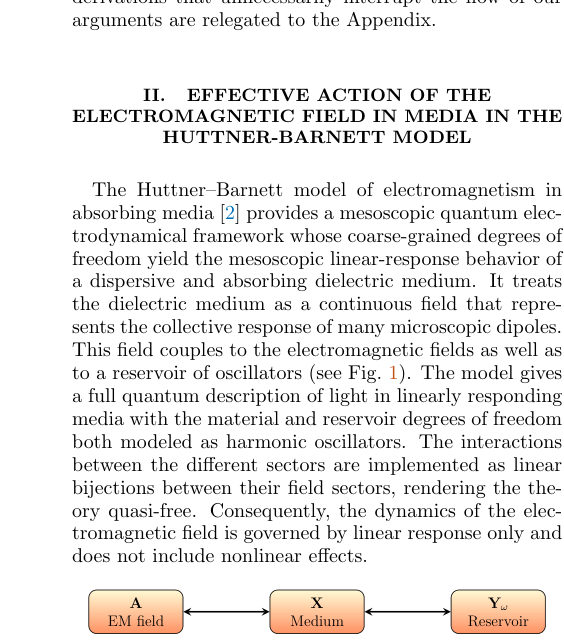
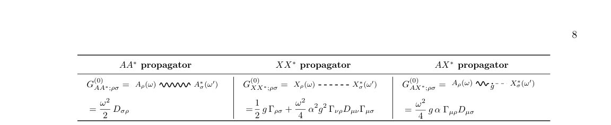
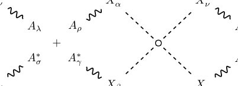
Summary. This paper provides a theoretical framework for the quantum electrodynamics of nonlinear, dispersive, and absorbing media. By using path integrals to integrate out matter and bath degrees of freedom, the authors derive the Feynman rules and effective action for light in a nonlinear dielectric. The result connects microscopic anharmonicity to macroscopic nonlinear optical responses like the Kerr effect.
Why it may be interesting. This work is highly relevant to quantum optics and open quantum systems as it addresses a fundamental gap in macroscopic QED: the simultaneous treatment of nonlinearities and dissipation within a unified, consistent framework.
Main problem. Developing a consistent quantum field theory for light in nonlinear dielectric media that simultaneously accounts for dispersion, absorption, and nonlinear optical processes (like Kerr nonlinearity) within a consistent fluctuation-dissipation framework.
Main result. The authors derive an effective action and Feynman rules for the electromagnetic field in a 'dressed vacuum,' establishing a relation between the third-order susceptibility and the matter-field anharmonicity that is consistent with Miller's rule.
Method. Path-integral quantization using a functional integral formalism to integrate out matter and reservoir degrees of freedom, followed by perturbation theory and the use of the Legendre transform to derive the effective action.
Model / system. A mesoscopic extension of the Huttner-Barnett model where the electromagnetic field interacts with a matter field (harmonic oscillators) which is further coupled to a reservoir (bath) to model dissipation, including a quartic self-interaction term to represent Kerr nonlinearity.
Key observables. Nonlinear susceptibility (chi-3), displacement field (D), memory kernel (Gamma), and photon-photon propagators.
Important parameters / regimes. Nonlinear coupling constant (lambda), linear susceptibility (chi-1), and the memory kernel (Gamma) representing temporal nonlocality.
Assumptions / limitations. The medium is assumed to be isotropic (vanishing chi-2), the nonlinearity is weak (lambda << 1) to justify perturbation theory, and the derivation uses the Weyl gauge.
Figures summary. Figure 1 shows a schematic of the Huttner-Barnett model (EM field, matter, and reservoir coupling); Figure 2 displays the tree-level propagators (AA, XX, and AX*); Figure 3 illustrates the four-point vertex function.
Paper structure. The paper begins by defining the microscopic Huttner-Barnett model, proceeds to perform path-integral quantization by integrating out the reservoir and matter fields, derives the effective action and Feynman rules, and concludes by expressing the macroscopic displacement field and nonlinear susceptibilities.
We construct a quantum theory of light in nonlinear dielectric media with dispersion and absorption. We employ a mesoscopic model for the light-matter interaction that include a fourth-order nonlinearity in the material response. Quantization is performed by constructing an effective action in a path-integral formalism by integrating out matter and bath degrees of freedom. We show how a nonlinear response function associated with Kerr nonlinearity is obtained through the model and, after full field quantization, we derive the Feynman rules from this theory.
Authors: Priyam Srivastava, Xin Jin, Junyu Liu, Gurudev Dutt, Tom Purdy, Kang Kim, Kaushik P. Seshadreesan
Type: theory · Category: quantum information and computing · PDF: https://arxiv.org/pdf/2605.03906v1
Analysis basis: full PDF text, analyzed in chunks
Topic relevance: 🔥 entanglement & information structure 4/5 · quantum measurements 3/5 · spintronics-quantum-optics interface 2/5
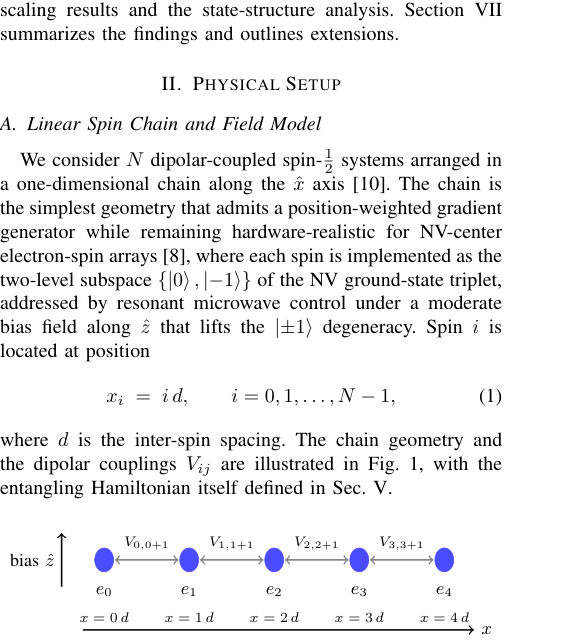
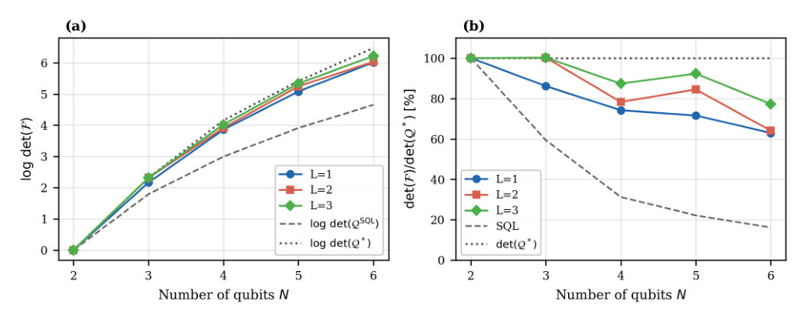
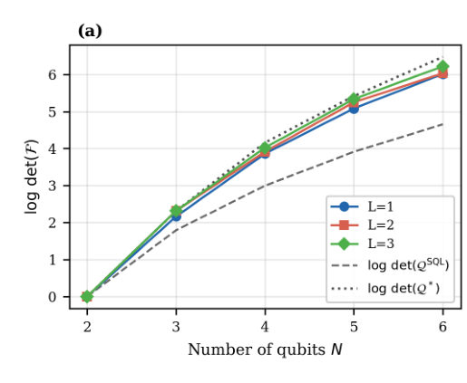
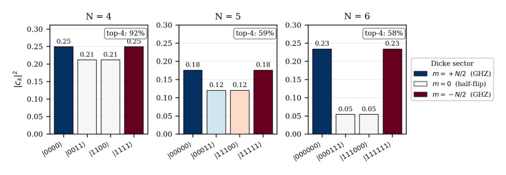
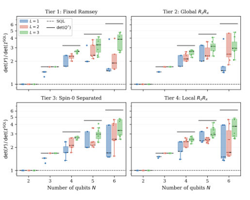
Summary. The paper presents a variational method to optimize quantum probes for the simultaneous sensing of magnetic fields and gradients in spin chains. It demonstrates that by using a specific 'four-string' entangled state, one can significantly outperform the Standard Quantum Limit. The study also quantifies how the complexity of the quantum circuit and measurement decoder affects sensing precision.
Why it may be interesting. It addresses a fundamental multi-parameter estimation challenge in quantum sensing, providing a concrete example of how entanglement can be structured to overcome the limitations of standard GHZ-based protocols in many-body systems.
Main problem. Simultaneous estimation of a uniform magnetic field and its spatial gradient in a dipolar-coupled spin chain, specifically avoiding the 'GHZ collapse' where the GHZ state becomes blind to one parameter.
Main result. The variational approach achieves a 4.2x advantage over the Standard Quantum Limit (SQL) at N=5 and identifies a 'four-string motif' as the optimal probe state structure.
Method. A variational framework using a hardware-motivated layered dipolar circuit ansatz, optimized via the CMA-ES algorithm, with a multi-tier decoder hierarchy.
Model / system. A 1D chain of N dipolar-coupled spin-1/2 systems (modeled after NV-center arrays) with a magnetic field model consisting of a bias B0 and a gradient g.
Key observables. Determinant of the Classical Fisher Information Matrix (det(F)), Quantum Fisher Information Matrix (QFIM), and the Standard Quantum Limit (SQL).
Important parameters / regimes. Chain length N, circuit depth L, and the encoding generators G_B0 and G_g.
Assumptions / limitations. The encoding generators are assumed to be diagonal in the computational basis, and the system is analyzed in the linear regime of the field expansion.
Figures summary. Figure 1 shows the linear chain geometry; Figure 3 illustrates the probability distribution of the optimized probe state across Dicke sectors; Figure 4 and 5 show the performance scaling and saturation deficit across different decoder tiers and system sizes.
Paper structure. The paper introduces the joint estimation problem and the failure of GHZ states, describes the dipolar spin chain model and variational ansatz, presents the optimization methodology (CMA-ES and simplex reduction), details the numerical results regarding quantum advantage and state motifs, and concludes with an analysis of encoder/decoder expressivity and scaling limits.
Estimating a uniform magnetic field B0 and its spatial gradient g on a dipolar-coupled spin chain calls for a multiparameter figure of merit. The GHZ state, optimal for single-parameter Heisenberg-limited sensing, has a rank-one quantum Fisher information matrix with det(Q^GHZ) = 0 at every chain length N, ruling it out for the two-parameter problem. We present a variational framework that takes det(F) as the objective and a hardware-motivated layered dipolar circuit as the ansatz. Both encoding generators are diagonal in the computational basis, which reduces the search for the quantum Fisher information benchmark to a probability-simplex optimization and yields a tractable best-found benchmark det(Q*) against which variational performance is compared. The same diagonal structure makes the classical Fisher information depend only on basis-state probabilities under any single-qubit decoder, so encoder and decoder parameters are co-trained with CMA-ES in a single run. Decoder optimization past fixed Ramsey adds at most a few percentage points across the grid, in contrast to the persistent decoder gains seen in our prior single-parameter work. Variational probes at L = 3 reach 0.92 of the best-found benchmark at N = 5, a 4.2x SQL advantage in det(F), and concentrate on a four-string motif of the two GHZ extrema and two half-chain-flip strings whose structure follows from the Dicke-sector decomposition of the two generators.
Authors: Chiara Vercellino, Giacomo Vitali, Paolo Viviani, Edoardo Giusto, Alberto Scionti, Andrea Scarabosio, Olivier Terzo, Bartolomeo Montrucchio
Type: both · Category: quantum information and computing · PDF: https://arxiv.org/pdf/2605.03524v1
Analysis basis: full PDF text, analyzed in chunks
Topic relevance: 🔥 Rydberg arrays 4/5 · analog quantum simulation 2/5 · exotic spin models in light-matter 2/5
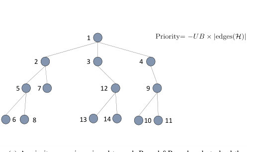
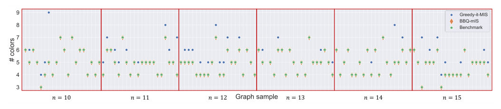
Summary. The paper presents BBQ-mIS, a hybrid algorithm that uses classical Branch and Bound to decompose large graph coloring problems into smaller subproblems solvable on Rydberg atom quantum hardware. By parallelizing these tasks across multiple quantum resources, the method achieves optimal coloring solutions despite limited qubit counts. This work provides a blueprint for integrating quantum processing units with high-performance computing clusters.
Why it may be interesting. It demonstrates a practical strategy for using Rydberg-based quantum simulators to solve combinatorial optimization problems by leveraging the natural mapping of graphs to atom-atom interactions.
Main problem. The challenge of solving large-scale graph coloring problems on current quantum hardware with limited qubit counts.
Main result. The BBQ-mIS algorithm effectively decomposes large graphs into smaller tasks, achieving coloring solutions that match the optimal results of the Gurobi classical solver.
Method. A hybrid quantum-classical approach combining a classical Branch and Bound (BB) algorithm with a quantum routine (QAOA) to identify maximal independent sets.
Model / system. The algorithm is designed for neutral atom quantum machines using the Rydberg blockade effect, where qubits represent vertices and edges are defined by the blockade radius.
Key observables. The occupancy of the Rydberg state (n_i) and the distribution of maximal independent set solutions.
Important parameters / regimes. Rydberg blockade radius (r_b), Rabi frequency (Omega), detuning (delta), and pulse sequence duration.
Assumptions / limitations. The graph representation relies on a Unit-Disk Graph (UDG) model, which may limit generality for non-UDG structures.
Figures summary. Figure 1 illustrates the Branch and Bound node structure, pruning criteria, and priority score; Figure 2 compares the coloring performance of BBQ-mIS and Greedy-it-MIS against the Gurobi benchmark.
Paper structure. The paper introduces the graph coloring problem and hardware limitations, describes the BBQ-mIS algorithm and its hybrid architecture, details the Rydberg atom physical model and emulation setup, presents benchmarking results against classical solvers, and discusses HPC-QC integration challenges.
Among the limitations of current quantum machines, the qubits count represents one of the most critical challenges for porting reasonably large computational problems, such as those coming from real-world applications, to the scale of the quantum hardware. In this regard, one possibility is to decompose the problems at hand and exploit parallelism over multiple size-limited quantum resources. To this purpose, we designed a hybrid quantum-classical algorithm, i.e., BBQ-mIS, to solve graph coloring problems on Rydberg atoms quantum machines. The BBQ-mIS algorithm combines the natural representation of Maximum Independent Set (MIS) problems onto the machine Hamiltonian with a Branch&Bound (BB) approach to identify a proper graph coloring. In the proposed solution, the graph representation emerges from qubit interactions (qubits represent vertexes of the graph), and the coloring is then retrieved by iteratively assigning one color to a maximal set of independent vertexes of the graph, still minimizing the number of colors with the Branch&Bound approach. We emulated real quantum hardware onto an IBM Power9-based cluster, with 32 cores/node and 256 GB/node, and exploited an MPI-enhanced library to implement the parallelism for the BBQ-mIS algorithm. Considering this use case, we also identify some technical requirements and challenges for an effective HPC-QC integration. The results show that our problem decomposition is effective in terms of graph coloring solutions quality, and provide a reference for applying this methodology to other quantum technologies or applications.
Authors: Chiara Vercellino, Giacomo Vitali, Paolo Viviani, Alberto Scionti, Olivier Terzo, Bartolomeo Montrucchio
Type: both · Category: quantum information and computing · PDF: https://arxiv.org/pdf/2605.03503v1
Analysis basis: full PDF text, analyzed in chunks
Topic relevance: 🔥 QC/QI experiment 4/5 · 🔥 Rydberg arrays 4/5
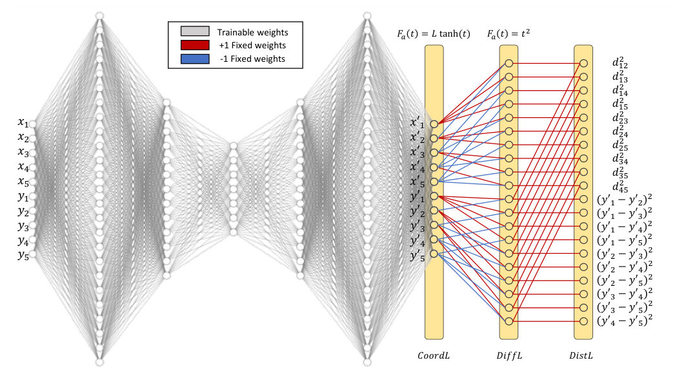
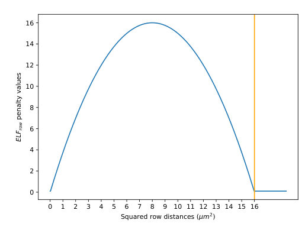
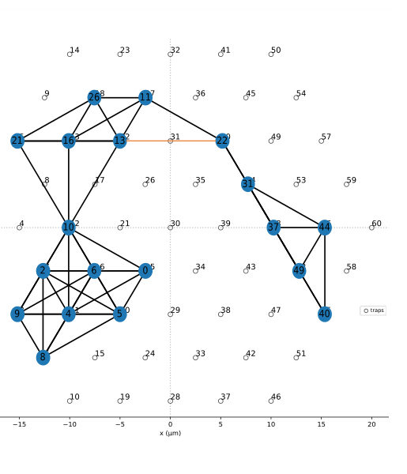
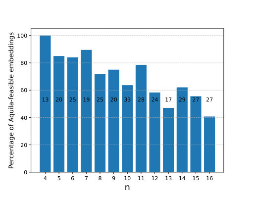
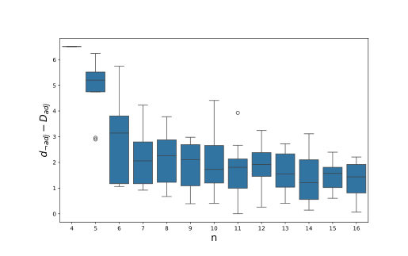
Summary. The researchers developed a neural-network-based method called Distance Encoder Networks to map complex graphs onto the physical constraints of neutral atom quantum computers. They successfully applied this to solve graph coloring for antenna networks and protein classification tasks. The approach is much faster than traditional optimization methods, though its success rate decreases as the number of atoms increases.
Why it may be interesting. This work is highly relevant as it bridges the gap between abstract graph problems and the physical constraints of Rydberg-based quantum hardware, providing a scalable heuristic for mapping complex networks to real-world atom arrays.
Main problem. Developing efficient methods to embed Unit-Disk Graphs (UDGs) onto the physical registers of real-world neutral atom QPUs while satisfying hardware-specific constraints like fixed lattices and row-spacing.
Main result. The Distance Encoder Networks (DEN) approach successfully embedded antenna network graphs on the Orion Alpha QPU and achieved up to 76% success for protein classification tasks on the Aquila QPU, significantly outperforming traditional optimization solvers in speed.
Method. A neural-network-based optimization solver (DEN) using an Embedding Loss Function (ELF) to learn feasible embeddings, adapted with specific penalty terms for hardware constraints like row-spacing and lattice mapping.
Model / system. Neutral atom quantum processing units (QPUs) using Rubidium-87 atoms, specifically the QuEra Aquila and PASQAL Orion Alpha platforms, utilizing the Rydberg blockade mechanism to represent graphs.
Key observables. The gap between non-adjacent and adjacent vertex distances (d_non-adj - d_adj), and the feasibility rate of embeddings.
Important parameters / regimes. Rydberg blockade radius, atom register dimensions (e.g., 75um x 76um for Aquila), minimum row spacing (4um), and vertex count (n).
Assumptions / limitations. The method assumes that the Rydberg blockade can effectively represent the edges of a Unit-Disk Graph and that the graph can be mapped to the available qubit-based register.
Figures summary. Fig 1 shows the DEN architecture; Fig 2 illustrates the row-spacing loss component; Fig 4 shows the decline in embedding success rate as vertex count increases; Fig 5 shows the distribution of the distance gap; Fig 6 shows a visual example of a successful large-scale embedding.
Paper structure. The paper introduces the problem of graph embedding on neutral atom hardware, describes the DEN architecture and its modifications for specific QPU constraints (Orion Alpha and Aquila), presents experimental results on antenna networks and protein datasets, and discusses scaling challenges and future replication strategies.
We present our work on effectively representing unit-disk graphs on the registers of neutral atom quantum machines. Specifically, we aimed to embed graphs corresponding to proteins and cellular antenna networks into unit-disk graphs, ensuring compatibility with the registers of two real QPUs: Orion Alpha by PASQAL and Aquila by QuEra. To address machine-specific constraints, we made adjustments and integrated Distance Encoder Networks (DEN) from our previous work. Despite these challenges, we successfully embedded up to 76% of protein-representing graphs for a quantum machine learning classification task on the Aquila QPU, and all subgraphs derived from 90 antenna geographical positions in Turin, Italy, on the Orion Alpha QPU. In the latter case, the graphs represented instances of the graph coloring problem, which we tackled using the hybrid quantum-classical algorithm BBQ-mIS. These promising results underscore the effectiveness and versatility of our embedding approach for representing unit-disk graphs on neutral atom quantum computers across diverse applications.
Authors: Maksymilian Kliczkowski, Jarosław Pawłowski, Masudul Haque
Type: theory · Category: disordered systems and neural networks · PDF: https://arxiv.org/pdf/2605.03043v1
Analysis basis: full PDF text, analyzed in chunks
Topic relevance: 🔥 entanglement & information structure 4/5 · non-equilibrium dynamics 2/5 · scars & prethermalization 2/5
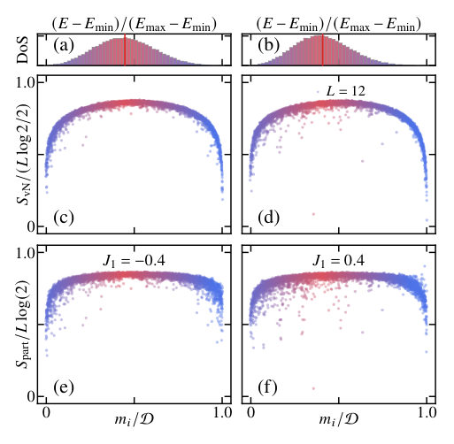
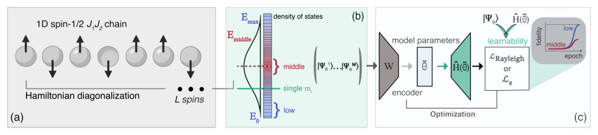
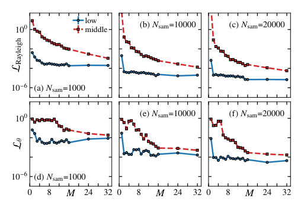
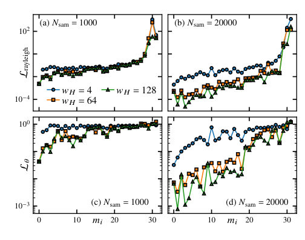
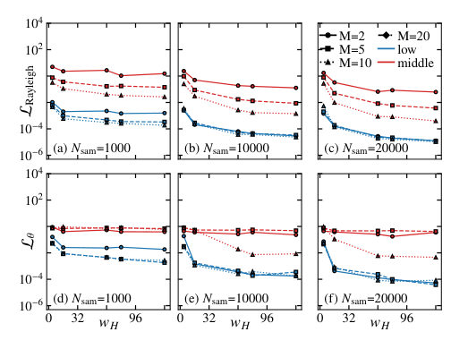
Summary. This paper introduces 'learnability' as a new way to quantify the information content of many-body eigenstates using machine learning. It demonstrates that while low-energy states can be used to accurately reconstruct Hamiltonian parameters, mid-spectrum states are intrinsically unlearnable due to their random-like nature. This finding suggests that the difficulty of Hamiltonian identification is rooted in the underlying physics of the quantum states.
Why it may be interesting. It provides a novel information-theoretic perspective on the structure of many-body spectra, linking the physical concept of thermalization/randomness to the fundamental limits of machine learning-based Hamiltonian identification.
Main problem. The study investigates how much information about a Hamiltonian's parameters is encoded within individual many-body eigenstates and how this 'learnability' depends on their spectral position.
Main result. The authors find that eigenstates near the spectral edges are highly learnable, whereas mid-spectrum states, which resemble random vectors, lack the intrinsic information necessary for accurate Hamiltonian reconstruction regardless of model capacity.
Method. An unsupervised encoder-decoder neural network architecture is used, employing a physics-inspired Rayleigh loss function to reconstruct Hamiltonian parameters from eigenstates obtained via Exact Diagonalization.
Model / system. A one-dimensional spin-1/2 J1-J2 chain with periodic boundary conditions, featuring nearest-neighbor and next-nearest-neighbor couplings and local magnetic fields.
Key observables. Learnability (reconstruction precision), Rayleigh loss, parameter error (MSE), spectral error, entanglement entropy, and participation ratio.
Important parameters / regimes. Coupling constants J1 and J2, number of input eigenstates (M), number of training samples (N_sam), and neural network width (w_H).
Assumptions / limitations. The study assumes that the failure to reconstruct mid-spectrum states is due to intrinsic physical properties (information loss) rather than limitations in neural network expressivity.
Figures summary. Figure 1 illustrates spectral differences via density of states and entanglement; Figure 2 sketches the ML protocol; Figure 3 shows reconstruction error vs. eigenstate index; Figure 5 demonstrates that increasing network width does not fix bulk reconstruction failure; Figure 6 shows generalization failure on unseen parameter intervals; Figure 9 shows stable convergence for multi-parameter inference.
Paper structure. The paper introduces the concept of learnability, describes the J1-J2 model and the autoencoder architecture, presents results comparing spectral edge vs. mid-spectrum states, investigates the impact of model capacity and training sample size, tests generalization capabilities, and extends the analysis to multi-parameter reconstruction.
To what extent do individual eigenstates encode information of their underlying Hamiltonian, and how does this depend on their spectral position? For many-body quantum systems, this issue is widely understood in terms of the differing nature of the eigenstates near the spectral edges (low-entanglement, highly-structured eigenstates) and those far from the spectral edges (high-entanglement, near-random eigenstates). Utilizing the availability of machine learning tools, we introduce a new way to quantify the information contained in eigenstates: for a particular learning architecture, how precisely can the Hamiltonian be reconstructed from a single eigenstate? We refer to this property as learnability; it serves as a new, alternative measure of the information content of eigenstates, made possible by machine learning. Using an encoder-decoder neural network and a physics-inspired loss function, we demonstrate how the distinction between two types of eigenstates is manifested as a difference in learnability. For spectral-edge eigenstates, the prediction accuracy is much better, and fewer eigenstates are required to learn the Hamiltonian, compared to mid-spectrum eigenstates.
Authors: Sisi Zhou
Type: theory · Category: quantum information and computing · PDF: https://arxiv.org/pdf/2605.03975v1
Analysis basis: full PDF text, analyzed in chunks
Topic relevance: 🔥 quantum measurements 4/5 · entanglement & information structure 2/5 · methods for driven-dissipative 2/5
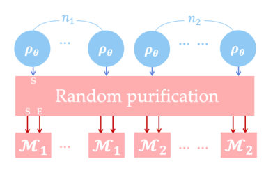
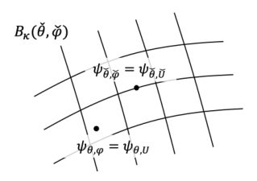
Summary. This paper introduces a new technique to study multi-parameter quantum metrology for mixed states by using their purifications. It proves that the precision limits (QCRB and HCRB) of mixed states are linked to those of their purifications and provides a practical measurement protocol to reach these limits using individual measurements.
Why it may be interesting. This work provides a powerful theoretical tool for researchers in quantum optics and open quantum systems to translate well-understood pure-state metrology results into the more complex regime of mixed-state parameter estimation.
Main problem. The difficulty of achieving optimal estimation precision in multi-parameter quantum metrology for mixed states, where incompatible measurements often make the Quantum Cramér-Rao Bound (QCRB) and Holevo Cramér-Rao Bound (HCRB) unattainable.
Main result. The paper establishes a connection between the metrological bounds of mixed states and their purifications and proposes a two-stage measurement protocol using random purification channels to asymptotically attain either the HCRB or twice the QCRB.
Method. A purification-based formulation that relates mixed-state bounds to pure-state bounds, combined with a two-stage measurement strategy involving a coarse estimation via random purification channels followed by optimal local estimation.
Model / system. A d-dimensional parameterized mixed state rho_theta (the probe system) and its purification involving an environmental system E of dimension r.
Key observables. Quantum Fisher Information Matrix (QFIM), Holevo Cramér-Rao Bound (HCRB), Quantum Cramér-Rao Bound (QCRB), and Weighted Mean Squared Error (WMSE).
Important parameters / regimes. Primary unknown parameters theta, nuisance parameters phi associated with the environment, and the asymptotic limit of the number of copies n approaching infinity.
Assumptions / limitations. The density matrix has a non-degenerate positive spectrum, the rank r is invariant for the parameter range, and the rank r is known a priori.
Figures summary. Figure 1 illustrates the measurement protocol involving the probe and environment systems and the random purification channel; Figure 2 depicts the parameterization of the environmental system and the kappa-ball regime for identifiability.
Paper structure. The paper introduces the purification-based formulation, establishes theorems relating mixed-state and pure-state bounds, develops a two-stage measurement protocol, and provides mathematical proofs for the regularity, injectivity, and continuity of the bounds and estimators.
We introduce new formulations of the quantum Cramér-Rao bound (QCRB) and the Holevo Cramér-Rao bound (HCRB) in multi-parameter quantum metrology via purification, where we show their values for any mixed state are connected to that for its purification with nuisance parameters introduced on the environmental system. Using this technique, we develop a new method for asymptotically attaining either the HCRB or twice the QCRB for arbitrary mixed states using random purification channels and individual measurements.
Authors: D. A. Herrera-Martí
Type: theory · Category: quantum information and computing · PDF: https://arxiv.org/pdf/2605.03715v1
Analysis basis: full PDF text, analyzed in chunks
Topic relevance: 🔥 methods for driven-dissipative 4/5 · driven-dissipative phase transition 2/5 · non-equilibrium dynamics 2/5
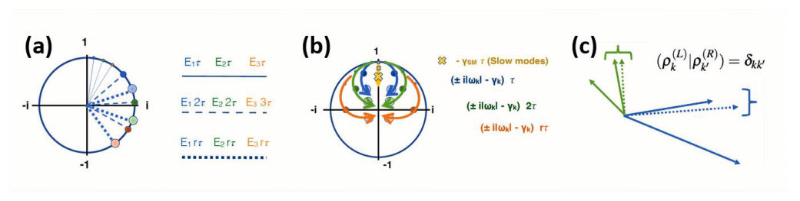
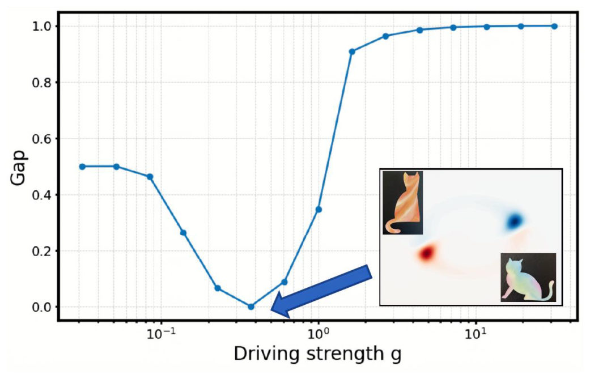
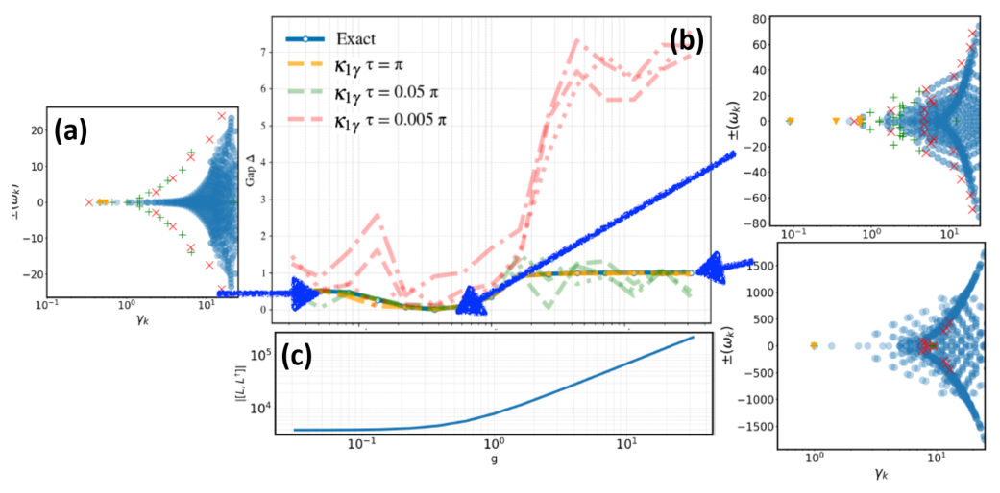
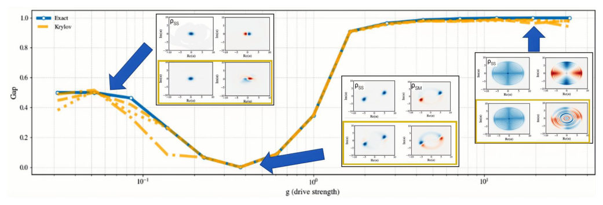
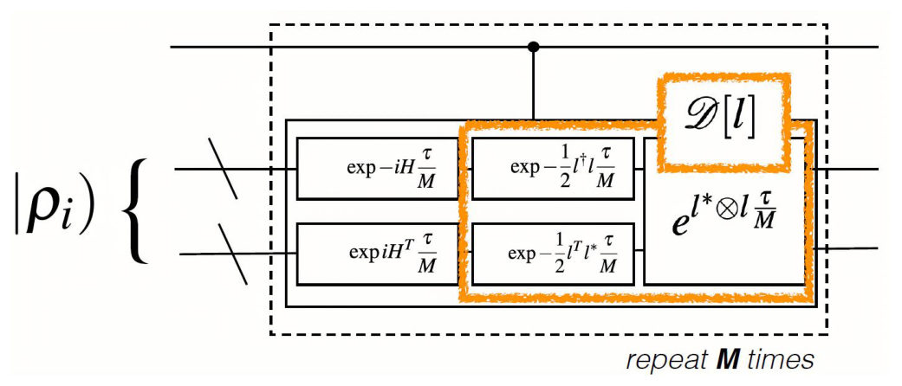
Summary. This paper presents a method to use real-time Krylov subspace diagonalization to simulate open quantum systems. It successfully applies this technique to estimate the Liouvillian gap in Kerr cat qubits, demonstrating that dissipative evolution can be used to filter out unwanted modes.
Why it may be interesting. It provides a NISQ-friendly, unbiased alternative to QPE for studying dissipative dynamics and the emergence of protected subspaces in driven-dissipative systems, which is crucial for developing error-protected cat qubits.
Main problem. Extending real-time Quantum Subspace Diagonalisation (QSD) methods from closed Hamiltonian systems to open quantum systems described by Lindblad master equations, specifically addressing numerical instabilities caused by non-normality.
Main result. The authors demonstrate that QSD can faithfully reconstruct the Liouvillian gap and Wigner representations in the Kerr Cat qubit regime, showing that dissipative dynamics can act as a spectral filter to suppress fast-decaying modes.
Method. Real-time Krylov Subspace Diagonalisation (QSD) using a Generalized Eigenvalue Problem (GEVP) approach applied to superkets, implemented via Trotterization and Quantum Imaginary Time Evolution (QITE).
Model / system. A two-photon driven superconducting Kerr resonator in the Kerr Cat qubit regime, modeled by a Lindblad master equation featuring Kerr nonlinearity, detuning, and single-photon loss.
Key observables. Liouvillian gap, photon number, field amplitude expectation value, and Wigner representations of eigenstates.
Important parameters / regimes. Kerr nonlinearity (K), two-photon pump strength (g), detuning (delta), photon loss rate (kappa), and Krylov dimension (D).
Assumptions / limitations. The method requires doubling the quantum register size to encode density operators, and the implementation assumes the ability to perform deep circuits and frequent trace estimations.
Figures summary. Figure 5 illustrates the quantum circuit architecture for simulating dissipative dynamics using Trotterized unitary circuits combined with QITE.
Paper structure. The paper introduces the extension of QSD to Lindblad dynamics, discusses the mathematical challenges of non-normality, applies the method to the Kerr Cat qubit model, and evaluates the accuracy and circuit implementation of the algorithm.
In this chapter we present how real-time quantum subspace methods can be modified to simulate open quantum systems in Lindblad form. We apply these methods to a two-photon driven superconducting Kerr resonator and show how they allow to estimate the Liouvillian gap in the Kerr Cat qubit regime. This is based on work done between November 2025 and January 2026 and on the talk given in early February 2026 at the Kwekfest 2026 conference, to celebrate L.C. Kwek's lifetime achievements.
Authors: Neil Dowling, Silvia Pappalardi
Type: theory · Category: statistical mechanics · PDF: https://arxiv.org/pdf/2605.02995v1
Analysis basis: full PDF text, analyzed in chunks
Topic relevance: 🔥 entanglement & information structure 4/5 · non-equilibrium dynamics 3/5
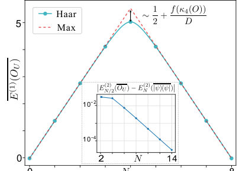
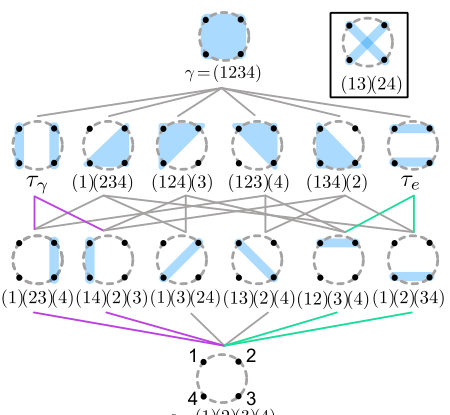
Summary. This paper uses free probability to analytically derive the Page curve for Local-Operator Entanglement in chaotic systems. It demonstrates that the leading-order entanglement of operators is independent of the initial operator's higher-order correlations, depending only on two-point functions. This suggests that the long-time behavior of LOE is governed by standard ETH rather than the full ETH.
Why it may be interesting. This is highly relevant for many-body dynamics as it provides a rigorous link between operator scrambling, chaos, and the statistical properties of entanglement, suggesting that higher-order ETH structure is not required to describe LOE.
Main problem. Determining the Page curve for Local-Operator Entanglement (LOE) in chaotic systems and investigating whether its long-time behavior depends on higher-order correlations (full ETH) or only on two-point correlations (standard ETH).
Main result. The authors analytically show that the LOE asymptotically reproduces the Page curve for random states for traceless operators, and that the leading-order LOE is independent of the initial operator, depending only on its autocorrelation functions.
Method. The study employs free probability theory, Weingarten calculus, and the Brauer algebra to compute Rényi entropies and purities in the large-dimension limit.
Model / system. The system consists of many-body chaotic quantum systems undergoing Haar-random unitary dynamics, analyzed via a spatial bipartition of a D-dimensional Hilbert space.
Key observables. Local-Operator Entanglement (LOE), k-Rényi entanglement entropy, operator k-purity, and free cumulants.
Important parameters / regimes. Large-dimension limit (D >> 1), Rényi indices (k), subsystem size (NA), and the distinction between traceless and finite-trace operators.
Assumptions / limitations. The results are primarily valid in the large-D asymptotic limit, assuming Haar-random dynamics and self-averaging of the entanglement properties.
Figures summary. Figure 1 shows the LOE Page curve for 8 qubits compared to the maximum possible entropy; Figure 2 illustrates the non-crossing partition lattice for k=4, showing the geometric structure of permutations.
Paper structure. The paper introduces the LOE concept, applies free probability and Weingarten calculus to derive the Page curve, compares operator entanglement to state entanglement, and discusses implications for the Eigenstate Thermalization Hypothesis (ETH).
The local-operator entanglement (LOE) measures the classical simulability of a Heisenberg operator and is conjectured to witness many-body chaos in locally interacting systems. Using tools from free probability, we analytically compute its value for Haar random dynamics for all Rényi indices. We find that it asymptotically reproduces the Page curve for random states in the case of traceless operators, with exponentially deviating corrections. In contrast to higher-order out-of-time ordered correlators, which depend on operator correlations via free cumulants, the leading-order LOE is independent of the initial operator. Guided by our Haar result, we therefore argue that the long-time value of the LOE entropies in chaotic systems will depend only on autocorrelation functions of the initial operator up to exponentially small corrections, suggesting that the higher-order structure of the full Eigenstate Thermalization Hypothesis is not necessary to describe it.
Authors: Haiping Hu
Type: theory · Category: other · PDF: https://arxiv.org/pdf/2605.03325v1
Analysis basis: full PDF text, analyzed in chunks
Topic relevance: 🔥 non-equilibrium dynamics 4/5 · analog quantum simulation 3/5
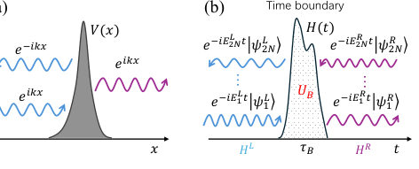
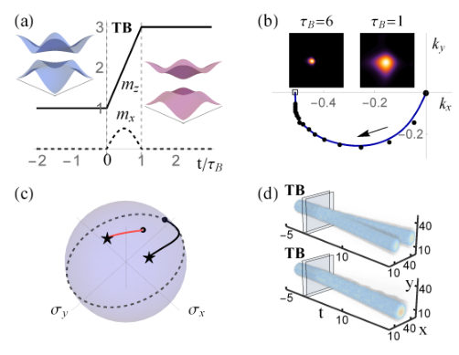
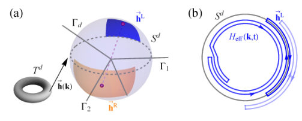
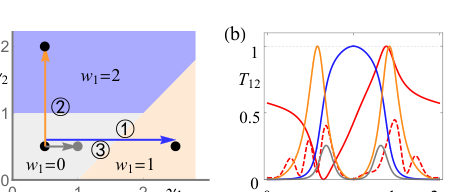
Summary. This paper establishes a unified scattering theory for quantum systems undergoing temporal transitions. It identifies 'topological resonant transmissions' that allow perfect state transfer between bands and proves that the number of these resonances is protected by the change in the system's bulk topology.
Why it may be interesting. It provides a powerful new tool for engineering and probing quantum dynamics, specifically offering a way to identify topological phases in cold atom systems by observing scattering patterns at high-symmetry points.
Main problem. The lack of a unified scattering framework for quantum systems at time-boundaries (TBs), which are temporal analogues of spatial interfaces.
Main result. The development of a Bloch-wave scattering theory for TBs, establishing a bulk-time-boundary correspondence where the number of topological resonant transmissions (RTs) equals the jump in the bulk topological invariant.
Method. The authors introduce a temporal scattering matrix (S-matrix) and transfer matrix (M-matrix) approach, treating the time-varying region as a scattering interface between two static phases.
Model / system. A d-dimensional lattice system with a piecewise time-dependent Hamiltonian H(t) that transitions between two static bulk phases (H_L and H_R) over a duration tau_B.
Key observables. S-matrix elements (reflection/transmission amplitudes), inter-channel transmission probability, birefringence, and dynamical freezing of the quantum state.
Important parameters / regimes. TB duration (tau_B), topological invariants (Chern number, winding number), and Altland-Zirnbauer symmetry classes.
Assumptions / limitations. The framework focuses on integer Altland-Zirnbauer classes and assumes a gap separating valence and conduction bands.
Figures summary. Figure 1 compares spatial and temporal scattering; Figure 4 shows the effect of disorder on transmission; Figure 5 illustrates the impact of symmetry-breaking temporal modulation.
Paper structure. The paper introduces the concept of time-boundaries, develops the Bloch-wave scattering theory, establishes the bulk-time-boundary correspondence, analyzes dimensional dependence and robustness, and extends the analysis to higher-order poles and 3D systems.
Time boundaries (TBs), temporal analogues of spatial interfaces, offer a powerful handle to engineer quantum systems. However, unlike the well-developed stationary scattering theory at spatial interfaces, a unified framework for quantum scattering at TBs has been missing. Here we develop a Bloch-wave scattering theory for TBs by introducing a temporal scattering matrix $S$ between incoming and outgoing Bloch channels. We uncover topological resonant transmissions (RTs) -- poles of $S$ that yield perfect interband transmission and dynamical freezing of the quantum state. We establish a bulk-time-boundary correspondence for all integer Altland-Zirnbauer classes: the number of RTs equals the jump of the bulk topological invariant across the TB. In one dimension this gives a time-domain Levinson's theorem. A topological analysis further reveals a striking dimensional dependence. In even dimensions RTs are robust to temporal modulations and disorder, whereas in odd dimensions they can be destroyed by dynamical symmetry breaking. Our work places temporal and spatial scattering on the same footing and opens new avenues for engineering and probing quantum dynamics.
Authors: Zinuo Cai, Jianxin Song, Changliang Ren
Type: theory · Category: quantum information and computing · PDF: https://arxiv.org/pdf/2605.03513v1
Analysis basis: full PDF text, analyzed in chunks
Topic relevance: 🔥 quantum measurements 4/5 · entanglement & information structure 3/5
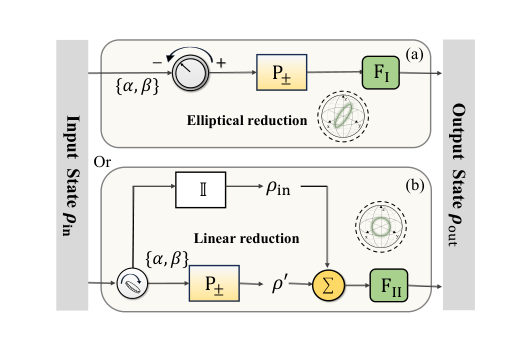
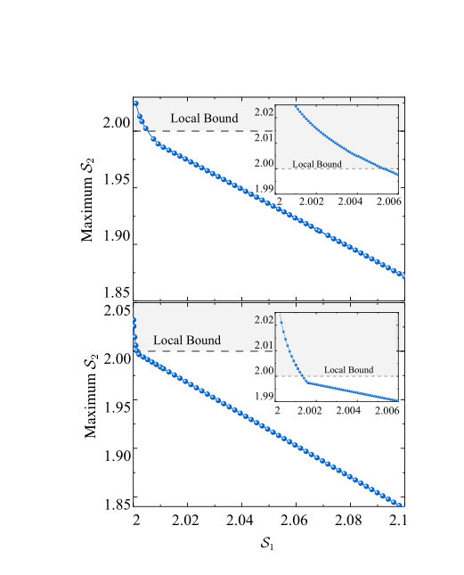
Summary. This paper introduces a unified framework to explain how the internal structure of quantum measurements determines the ability to reuse quantum correlations. It proves that Bell nonlocality can be shared among an unlimited number of sequential observers by tailoring measurement backaction. The study demonstrates that quantum instruments, not just measurement statistics, are the fundamental constraints on quantum resource recycling.
Why it may be interesting. This work is highly relevant to quantum optics and open quantum systems as it provides a fundamental physical mechanism (instrument-dependent backaction) for the degradation of quantum resources during sequential measurements.
Main problem. Understanding the fundamental limits of recycling quantum correlations, such as Bell nonlocality, in sequential multi-observer measurement scenarios.
Main result. The authors establish a unified framework showing that correlation sharing is governed by quantum-instrument-dependent backaction rather than just POVM statistics, proving that both unilateral and bilateral Bell nonlocality can be shared across arbitrary numbers of observers.
Method. The study uses a Kraus-decomposition-based functional framework to analyze measurement backaction, employing analytical derivations, small-angle limit analysis, and MultiStart Sequential Quadratic Programming (SQP) for optimization.
Model / system. The framework considers a single-qubit binary measurement observable and a pure entangled two-qubit state, evaluating two measurement reduction models: the Elliptical Reduction Model (based on Lüders decomposition) and the Linear Reduction Model.
Key observables. CHSH violation values (S-parameters), Bell nonlocality, and coherence retention (reduction factor F).
Important parameters / regimes. Measurement sharpness (alpha), outcome bias (beta), measurement angles (phi, theta), and the number of sequential observers (N).
Assumptions / limitations. The analysis assumes specific measurement ansatzes, such as the elliptical and linear reduction models, and relies on the small-angle limit (phi to 0) for asymptotic scaling proofs.
Figures summary. Figure 1 illustrates how the elliptical reduction model constrains coherence reduction to an elliptical trajectory; Figure 2 shows the Pareto frontier of CHSH violations in the bilateral scenario.
Paper structure. The paper introduces the problem of correlation recycling, develops a unified quantum-instrument framework, analyzes unilateral sharing limits, explores bilateral sharing scenarios via optimization, and provides asymptotic scaling proofs for infinite sharing.
Accurate characterization of measurement backaction is crucial for understanding the limits of reusing quantum correlations in sequential scenarios. Here, we develop a unified quantum-instrument framework that goes beyond simple measurement statistics, explicitly attributing correlation sharing to Kraus-structure-dependent backaction. By tracing operational differences to this underlying physical mechanism, our framework integrates previously disparate strategies. Within this formulation, we derive general conditions for unbounded unilateral nonlocality sharing across arbitrarily many observers. The framework further reveals that Bell nonlocality remains shareable in bilateral sequential scenarios. These results establish quantum instruments, rather than POVMs alone, as the fundamental constraints on correlation sharing, providing a unified conceptual framework for quantum resource recycling.
Authors: Michael Herty, Yijia Tang, Yizhou Zhou
Type: theory · Category: numerical methods · PDF: https://arxiv.org/pdf/2605.03773v1
Analysis basis: full PDF text, analyzed in chunks
Topic relevance: 🔥 entanglement & information structure 4/5 · methods for driven-dissipative 2/5
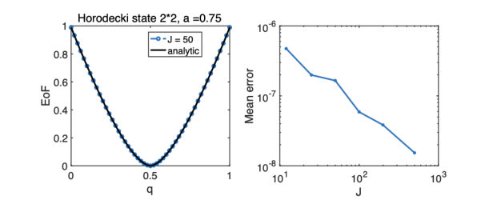
Summary. This paper introduces new consensus-based optimization algorithms designed to preserve the geometric structure of quantum states when computing entanglement. By evolving particles directly on the Stiefel manifold or using Hermitian-preserving dynamics, the authors achieve more accurate and stable entanglement measurements than traditional projection methods. The introduction of a multi-species approach further improves efficiency by allowing information exchange between different system dimensions.
Why it may be interesting. It provides a new class of gradient-free, structure-aware numerical tools for characterizing entanglement in high-dimensional systems, which is critical for analyzing the complexity of many-body states and quantum information resources.
Main problem. Computing the Entanglement of Formation (EoF) for high-dimensional bipartite mixed quantum states, which is a non-convex, computationally intractable optimization problem subject to complex Stiefel manifold constraints.
Main result. The proposed structure-preserving CBO methods (Hermitian and Unitary preserving) outperform standard projection-based methods in accuracy and stability, while the multi-species CBO enhances convergence through cross-dimensional information exchange.
Method. A stochastic, gradient-free Consensus-Based Optimization (CBO) framework using particle-based SDEs, specifically adapted with exponential integrators and anisotropic diffusion to maintain the algebraic structure of the optimization manifold.
Model / system. Bipartite mixed quantum states (density matrices) such as Werner, Isotropic, and Horodecki states, characterized by their dimension and entanglement properties.
Key observables. Entanglement of Formation (EoF), Concurrence, and von Neumann entropy of reduced states.
Important parameters / regimes. Number of particles (J), drift rate (lambda), noise intensity (sigma), and the dimension of the optimization space (M).
Assumptions / limitations. The Hermitian-preserving method assumes the existence of a sufficiently large dimension M to capture the rank of the state; the validity of the method relies on the Laplace principle for Gibbs distribution weighting.
Figures summary. Figures illustrate the multi-level particle interaction concept, error analysis of EoF as a function of particle number, trajectories of entanglement over time, and performance comparisons between structure-preserving, projection, and multi-species CBO methods across different quantum states.
Paper structure. The paper defines the entanglement optimization problem on the Stiefel manifold, proposes two structure-preserving CBO variants and a multi-species extension, provides mathematical proofs for structure preservation and convergence, and validates the methods through numerical experiments on Werner, Isotropic, and Horodecki states.
The computation of quantum entanglement can be formulated as a high-dimensional nonconvex optimization problem with orthogonality constraints. In this work, we propose structure-preserving consensus-based optimization (CBO) methods for entanglement computation, with one approach based on a Hermitian formulation and the other evolving directly on the unitary manifold. To handle the variable dimension of the feasible set, we introduce a cross-dimensional interaction mechanism allowing exchange of information between particles of different sizes. Numerical experiments demonstrate that the proposed methods achieve accurate approximations.
Authors: Robert Okuła, Adrian Misiak, Piotr Mironowicz
Type: theory · Category: quantum information and computing · PDF: https://arxiv.org/pdf/2605.03194v1
Analysis basis: full PDF text, analyzed in chunks
Topic relevance: 🔥 entanglement & information structure 4/5 · quantum measurements 2/5
Summary. This paper presents a numerical method to map the relationship between quantum discord and Bell non-locality in two-qubit systems. It identifies the minimum amount of discord needed to maintain specific levels of Bell violation across various Bell inequalities. The results reveal how different measurement settings and noise levels influence the bounds of these quantum correlations.
Why it may be interesting. This work provides fundamental insights into the hierarchy of non-classical correlations, which is crucial for understanding the resource requirements for quantum tasks in quantum optics and open quantum systems.
Main problem. The study investigates the relationship and correlations between quantum discord and Bell non-locality, specifically seeking the minimum discord required for a bipartite state to exhibit a specific level of Bell violation.
Main result. The authors establish lower bounds for discord across six Bell expressions, finding that discord vanishes at the classical limit and that increasing measurement settings generally lowers the required discord. They also suggest the existence of two distinct classes of optimized states based on their minimized discord.
Method. A numerical framework using a purification-based approach for state parametrization, combined with global optimization techniques including Basin-hopping and the COBYQA algorithm.
Model / system. The study focuses on bipartite two-qubit mixed states, represented via a purification-based scheme with 15 optimization variables including eigenvalues and local rotation angles.
Key observables. Quantum discord (D), Bell violation (|B|), and the fraction of the Tsirelson bound (p).
Important parameters / regimes. The noise parameter (p), representing the fraction of the maximal quantum Bell value, and the number of measurement settings in different Bell inequalities.
Assumptions / limitations. The analysis is restricted to two-level systems (qubits) and assumes the use of projective measurements for the definition of quantum discord.
Figures summary. Figures 1-3 show the lower bounds of discord for various Bell families (CHSH, ModCHSH, Braunstein-Caves, and I-family) as a function of the Bell violation fraction p; Figure 4 provides a summary comparison of all six expressions; Figures 5-7 show detailed numerical optimization landscapes and local minima for specific expressions.
Paper structure. The paper introduces the problem of discord-nonlocality correlations, describes the numerical framework and state parametrization, presents the comparative analysis of six Bell inequalities, discusses the optimization landscape and state classification, and concludes with limitations and future directions.
We present a numerical framework for the certification and systematic analysis of the relationship between Bell nonlocality and quantum discord. By determining the minimum discord required for a bipartite state to manifest a specific Bell violation, we establish lower bounds for these correlations. We evaluate this methodology across six distinct Bell expressions, comparing their performance through the minimal discord values observed under varying intensities of white noise. Analysis of the resulting optimization landscape suggests the existence of two characteristic classes of optimized states, categorized by their minimized quantum discord.
Authors: Chiara Vercellino, Giacomo Vitali, Paolo Viviani, Alberto Scionti, Andrea Scarabosio, Olivier Terzo, Edoardo Giusto, Bartolomeo Montrucchio
Type: theory · Category: quantum information and computing · PDF: https://arxiv.org/pdf/2605.03565v1
Analysis basis: full PDF text, analyzed in chunks
Topic relevance: 🔥 Rydberg arrays 4/5
Summary. This paper introduces a neural network-based approach to solve the difficult task of embedding graphs onto the physical layout of neutral-atom quantum computers. By using a specialized autoencoder, the method efficiently finds spatial configurations that satisfy strict physical distance constraints. This provides a scalable alternative to classical optimization for preparing quantum hardware for specific computational tasks.
Why it may be interesting. It addresses a critical bottleneck in the NISQ era: the mapping of abstract computational problems onto the physical geometry of Rydberg atom arrays, using machine learning to automate hardware-specific embedding.
Main problem. The challenge of graph embedding, specifically finding a spatial realization of a graph (the Constrained Unit Disk Graph problem) to represent QUBO problems on neutral-atom-based quantum hardware.
Main result. The proposed Distance Encoder Network (DEN) outperforms classical solvers like Ipopt in finding feasible embeddings, especially as dimensionality increases, although classical solvers may achieve a better adjacency gap when successful.
Method. A neural-enhanced optimization framework using a modified autoencoder (Distance Encoder Network) and a custom Embedding Loss Function (ELF) to learn spatial transformations from non-feasible to feasible solutions.
Model / system. The application context is neutral-atom-based quantum hardware using Rydberg atoms in 2D or 3D registers, where the blockade effect determines connectivity via a spin Hamiltonian (Ising model).
Key observables. Adjacency gap, feasibility of the embedding, and computational time/scaling.
Important parameters / regimes. Minimum atom distance (4 um), maximum register radius (50 um), interaction radius (~10.26 um), and dimensionality (N=2 or 3).
Assumptions / limitations. The Fruchterman-Reingold initialization assumes a specific equilibrium distance; the framework assumes the problem can be mapped to a spatial transformation task.
Figures summary. Figure 1 shows adjacency matrices and feasible/unfeasible embeddings; Figure 2 illustrates clique and degree-constrained embeddings; Figure 3 depicts the optimization framework; Figure 4 shows scaling of computation time and epoch-to-feasibility; Figure 5 and 6 compare DEN performance against Ipopt in terms of feasibility and adjacency gap.
Paper structure. The paper introduces the CUDG problem, defines the physical hardware constraints, proposes the DEN architecture and ELF loss function, details the experimental setup and dataset generation, and concludes with a comparative performance analysis against classical solvers.
Quantum machines are among the most promising technologies expected to provide significant improvements in the following years. However, bridging the gap between real-world applications and their implementation on quantum hardware is still a complicated task. One of the main challenges is to represent through qubits (i.e., the basic units of quantum information) the problems of interest. According to the specific technology underlying the quantum machine, it is necessary to implement a proper representation strategy, generally referred to as embedding. This paper introduces a neural-enhanced optimization framework to solve the constrained unit disk problem, which arises in the context of qubits positioning for neutral atoms-based quantum hardware. The proposed approach involves a modified autoencoder model, i.e., the Distances Encoder Network, and a custom loss, i.e., the Embedding Loss Function, respectively, to compute Euclidean distances and model the optimization constraints. The core idea behind this design relies on the capability of neural networks to approximate non-linear transformations to make the Distances Encoder Network learn the spatial transformation that maps initial non-feasible solutions of the constrained unit disk problem into feasible ones. The proposed approach outperforms classical solvers, given fixed comparable computation times, and paves the way to address other optimization problems through a similar strategy.
Authors: Lucas Tsunaki, Boris Naydenov
Type: both · Category: quantum information and computing · PDF: https://arxiv.org/pdf/2605.03564v1
Analysis basis: full PDF text, analyzed in chunks
Topic relevance: 🔥 QC/QI experiment 4/5
Summary. This paper introduces a 'Quantum Vault' protocol for token authentication that removes the need to store classical state information, preventing hackers from forging tokens via stolen database data. By storing a physical quantum copy at the bank, the protocol achieves extremely low forgery rates on current noisy quantum hardware. The approach provides a scalable path toward secure, traceable, and revocable quantum authentication.
Why it may be interesting. not directly relevant
Main problem. Existing quantum token protocols are vulnerable to attacks where hackers steal classical side-information (like Bloch sphere angles) from the issuing agent to forge tokens. The goal is to create a protocol that eliminates the need for storing classical state information.
Main result. The proposed 'Quantum Vault' protocol achieves high security, with forgery probabilities as low as 10^-18 for a 200-token bill, even on noisy IBMQ hardware. It demonstrates that removing classical data protects against bank-side database compromises.
Method. The authors use a SWAP test to compare a user's token against a physical quantum copy stored in a bank's vault. They benchmark the protocol using the Qiskit SDK on three IBM Quantum (IBMQ) processors (Kingston, Fez, and Marrakesh).
Model / system. The system consists of two identical Haar random qubit states prepared via rotation operators. The experimental platform uses IBMQ Heron r2 family superconducting processors.
Key observables. The SWAP test observable (average of the bitstring C_N), quality parameters (oscillation amplitude Q_a and offset Q_o), and the acceptance threshold (tau).
Important parameters / regimes. Number of tokens in a bill (M), number of SWAP test repetitions (N), and the target probability of accepting genuine tokens (p_b = 0.99).
Assumptions / limitations. Assumes the existence of a quantum channel between the bank and the agent, and assumes the use of error mitigation/correction to prevent decoherence during storage.
Figures summary. Figure 1 illustrates classical side-information attack scenarios; Figure 2 shows the Quantum Vault scheme; Figure 4 shows the density distribution of the SWAP test observable and the exponential decay of forgery probability with increasing token numbers; Figure 5 displays hardware-specific measurement outcomes.
Paper structure. The paper identifies a vulnerability in current quantum tokens, proposes the Quantum Vault architecture, describes the hardware-agnostic implementation, benchmarks the protocol on IBMQ hardware, and performs a security analysis against query attacks.
Quantum tokens are underlying primitives for quantum money and network proposals, which leverage the no-cloning theorem to realize unforgeable authentication. A relevant but overlooked type of attack to such architectures is a hacker that steals the classical side information of the token states from the issuing agent (e.g. a bank), allowing the forgery of fake tokens without violating no-cloning theorem. Our proposal avoids this threat by removing classical side information about the token states, where instead a copy of the token is stored at the bank, i.e. a quantum vault. This copy can be accessed by anyone to perform authentication, consuming the token pair in the process. Our protocol is benchmarked and quality parameters are identified within a hardware agnostic framework employing three cloud-based IBM quantum (IBMQ) processors, such that the protocol is applicable to arbitrary quantum platforms. By comparing the efficiency with which genuine tokens are produced and authenticated with a possible query attack scenario, we demonstrate the security of the protocol. Where we achieve probabilities lower than $10^{-4}$ for false-negative errors and $10^{-18}$ for successful attacks when considering quantum bills composed of 200 tokens, even in the worst performing hardware. The quantum vault not only symmetrically protects both user and bank with the same quantum principles, but provides a step towards public key authentication, since any untrusted party can have authentication access granted from the bank to the tokens without being able to clone them, assuming they have a quantum channel with the vault. Besides public accessible verifiability, our proposal naturally achieves standard unforgeability, traceability and revocability.
Authors: Farid Ya. Khalili
Type: theory · Category: other · PDF: https://arxiv.org/pdf/2605.03559v1
Analysis basis: full PDF text, analyzed in chunks
Topic relevance: 🔥 quantum measurements 4/5
Summary. This paper extends the concept of the Dissipative Quantum Limit from stationary to non-stationary quantum sensors. It demonstrates that while the DQL does not limit the sensitivity of a single known signal in non-stationary systems, it imposes a new uncertainty relation when measuring multiple signal quadratures simultaneously. This provides a deeper understanding of the fundamental limits of precision in time-varying quantum measurements.
Why it may be interesting. This is highly relevant for researchers in quantum optics and open quantum systems as it redefines the fundamental precision limits for time-dependent sensing protocols and explores the boundaries of the Standard Quantum Limit.
Main problem. The paper investigates whether the Dissipative Quantum Limit (DQL), which constrains the sensitivity of stationary quantum sensors, also applies to non-stationary quantum sensors.
Main result. The author finds that for a single known signal shape, the DQL does not inherently limit sensitivity in non-stationary systems, but a DQL-like uncertainty relation emerges when attempting to simultaneously measure multiple signal quadratures.
Method. The study employs linear measurement theory, commutator-based analysis, and the quantum Cramér-Rao bound to optimize noise spectral density under uncertainty constraints.
Model / system. The model consists of a linear quantum force sensor comprising a probe subsystem and a meter subsystem, such as optomechanical sensors or gravitational-wave detectors, subject to signal, thermal, and back-action forces.
Key observables. Sum noise spectral density, signal-to-noise ratio (SNR), and the quadrature amplitudes of the signal force.
Important parameters / regimes. Susceptibility function (chi), dynamic rigidity (K), dissipation (friction coefficient H), and the Standard Quantum Limit (SQL) and Dissipative Quantum Limit (DQL).
Assumptions / limitations. The sensors are assumed to be linear; the dissipation in the probe is assumed to be stationary; the meter is analyzed in a memoryless case where dynamic rigidity is zero.
Figures summary. Figure 1 provides a schematic of a generic linear force sensor illustrating the interaction between the probe, meter, signal force, thermal force, and back-action force.
Paper structure. The paper begins by extending the DQL analysis from stationary to non-stationary systems, moves to a mathematical framework using linear measurement theory, analyzes a specific memoryless meter case study, and concludes with the derivation of uncertainty relations for multiple signal quadratures.
The concept of the dissipative quantum limit (DQL) was first put forward in 1980s and was analyzed in detail much later in Ref. [Phys. Rev. A 103, 043721 (2021)] for the particular case of stationary (invariant with respect to a shift of time) systems. Here we extend that analysis to the general non-stationary case.
Authors: Anne Weber
Type: theory · Category: other · PDF: https://arxiv.org/pdf/2605.03794v1
Analysis basis: abstract only; PDF text extraction failed or PDF unavailable
Topic relevance: Keldysh / 2PI / non-Gaussian methods 3/5 · interference shaping light 2/5 · methods for driven-dissipative 2/5 · non-equilibrium dynamics 2/5
Summary. This thesis introduces Picard-Lefschetz theory as a universal approach to solving the oscillatory integrals found in attosecond science. By providing a way to handle caustics where standard saddle-point methods fail, it enables a more systematic analysis of high-order harmonic generation and strong-field ionization. This advancement improves the theoretical understanding and potential control of ultrafast light-matter interactions.
Why it may be interesting. It provides a robust mathematical tool for handling singularities and caustics in light-matter interactions, which is crucial for the precise control of attosecond pulse generation and understanding non-linear quantum dynamics.
Main problem. The lack of a general mathematical framework for applying saddle-point methods to highly oscillatory integrals in strong-field physics, particularly when trajectories coalesce at caustics.
Main result. The development of practical numerical methods using Picard-Lefschetz theory to evaluate oscillatory integrals and identify individual critical point contributions, even in caustic regions where standard approximations fail.
Method. Application of Picard-Lefschetz theory to decompose highly oscillatory integrals into contributions from distinct saddle points of the semi-classical action.
Model / system. The system involves atoms interacting with intense, ultrashort laser pulses, specifically within the context of high-order harmonic generation (HHG) and strong-field ionization.
Key observables. High-order harmonic spectrum and electron trajectories.
Important parameters / regimes. Laser field parameters, driving laser configuration, and the attosecond timescale.
Assumptions / limitations. The physics is described using a 'quantum orbits' model based on semi-classical action and interfering electron trajectories.
Paper structure. The work introduces Picard-Lefschetz theory, develops numerical implementation methods, and then applies these techniques to the study of caustics in strong-field ionization and HHG.
Ultrashort laser pulses on the attosecond timescale are typically achieved via high-order harmonic generation (HHG), a nonlinear process in which atoms interact with intense light fields to emit a broad spectrum of harmonics. HHG is commonly described in terms of a `quantum orbits' model based on several interfering electron trajectories, thereby incorporating both quantum-mechanical effects and an intuitive picture of classical dynamics. By tuning the parameters of the driving laser field, the interplay between these trajectories can be controlled, shaping the emitted light. Mathematically, this model expresses the harmonic response as a highly oscillatory integral. Applying saddle-point methods to this integral allows it to be decomposed into contributions from distinct saddle points of the semi-classical action, thereby linking quantum dynamics to classical trajectories. However, a general framework for applying these methods across arbitrary parameters and laser configurations has been missing. In this thesis, we introduce Picard--Lefschetz theory and develop practical numerical methods for its application. These enable the evaluation of oscillatory integrals and identification of contributions from individual critical points. We apply these techniques to strong-field ionisation and HHG, focusing on caustics -- enhancement features where trajectories coalesce and standard approximations fail. Our methods remain valid in these regions, allowing systematic analysis of parameter regimes and revealing previously inaccessible features. This work improves the understanding and control of ultrafast light--matter interactions.
Authors: Rafael Romero Mendez, Sashank Kaushik Sridhar, Samyak Gothi, Pradyoth Shandilya, Yichen Shen, Curtis Menyuk, Avik Dutt
Type: theory · Category: quantum information and computing · PDF: https://arxiv.org/pdf/2605.03995v1
Analysis basis: abstract only; PDF text extraction failed or PDF unavailable
Topic relevance: driven-dissipative phase transition 3/5 · entanglement & information structure 2/5 · methods for driven-dissipative 2/5 · non-equilibrium dynamics 2/5
Summary. This paper provides the first multimode quantum analysis of pure-Kerr parametrically driven cavity solitons. It demonstrates that these solitons can generate significant squeezing (up to 20 dB) and exhibit quantum-analogous dispersive waves. These findings offer a new way to achieve strong multimode quantum noise reduction for metrology and nonlinear dynamics.
Why it may be interesting. It is highly relevant for quantum optics and open quantum systems as it identifies a pathway to achieve high-level (20 dB) multimode squeezing and explores the quantum-classical correspondence in nonlinear wave phenomena.
Main problem. The study aims to provide the first multimode quantum description of pure-Kerr parametrically driven cavity solitons (PDCS) and explore their quantum noise properties.
Main result. The authors uncover single- and two-mode squeezing in the below-threshold regime and identify novel 'quantum' dispersive waves (the quantum analog of soliton Cherenkov radiation) above threshold, demonstrating up to 20 dB of squeezing.
Method. The study employs a multimode quantum description of the nonlinear dynamics within the cavity.
Model / system. The system consists of pure-Kerr parametrically driven cavity solitons (PDCS), which are localized optical pulses arising from parametric processes in a Kerr medium.
Key observables. Single-mode squeezing, two-mode squeezing, and quantum dispersive waves.
Important parameters / regimes. Below threshold and above threshold regimes; squeezing levels limited by overcoupling and intrinsic losses.
Assumptions / limitations. The analysis assumes a pure-Kerr medium and considers losses primarily through overcoupling and intrinsic mechanisms.
Paper structure. The paper introduces PDCS, presents a multimode quantum description, analyzes squeezing in the below-threshold regime, investigates quantum dispersive waves above threshold, and discusses experimental feasibility regarding squeezing levels.
Parametrically driven cavity solitons (PDCS), unlike single-pumped cavity solitons, are localized optical pulses arising from parametric processes. These cavity solitons, recently discovered in pure-Kerr media, offer great promise for nonlinear dynamics studies and metrology. Here, we present the first multimode quantum description of pure-Kerr PDCS. In the below threshold regime, we verify single- and two-mode squeezing, while above threshold we uncover novel "quantum" dispersive waves - the quantum analog of soliton Cherenkov radiation. Besides revealing these unexplored quantum properties, we show that PDCS generates up to 20 dB of squeezing, only limited by overcoupling and intrinsic losses for experimentally routine parameters. We therefore provide a pathway to observe strong multimode quantum noise reduction in these systems.
← Index · ← Previous · Next →